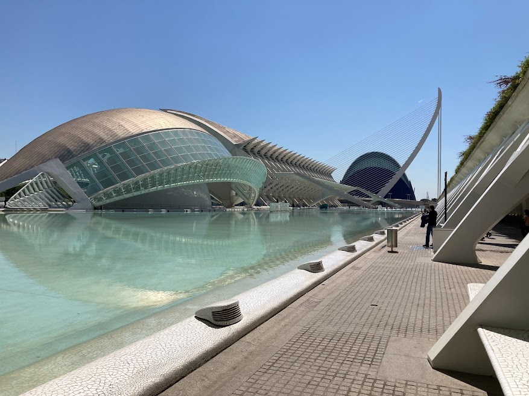

A World Over
Footprints
"travel is fatal to prejudice" - Mark Twain
Valencia, Spain
I am a sucker for juxtaposition, a characteristic embodied well in Valencia. The new and the old blend semelessley as we ride bikes from Museo de las Ciencias to Torres Cerranos connected by a central park that cuts the city in half. Generous bike lanes and the central park makes for limited interruptions while travelling by bike, helping us to appreciate the scultures and observe the city dwellers without the need to mind traffic too much.
Our exploration of the old city begins at Torres Serranos built 1392, where we lock up our bikes. The views at the top of the Torres along the parapet have you imagine trying to defend the ctiy, what it must have required to conquor it. Venturing further into the old town, we are reminded that the historical nature is more than just 'old', but the Islamic, Renaissance, and Baroque styles of architecture capture generations of regional development that flow into contemporary Valencian.
The food has incredible nostalgia value, but travelling with someone visiting for the fist time helps me realize that my nostalgia may just be an imaginary seasoning. The restaurant with a picture of Steven Gerrard on the wall and his signature makes it feel world class. Sepia a la plancha - grilled cuttlefish with lemon. My wife reminds me how little spice Spaniards use and how bland the food can taste sometimes. Yet it works well, and for some reason I still remember what little flavor that cuttlefish dish held. I have had my fair share of fish and chips; however, seafood a la plancha for some reason holds better memories. Perhaps the manner cooked - keeping the fish as recognizable possible - whispers a certain respect for the sea it came from. Yes, that cuttlefish was bland, grilled on a metal plate with lemon and a pinch of salt, but I preferred it that way this time.
Mt.Rainier National Park, WA

The Cascade Range surrounding Mt. Rainier is lush with subalpine meadows and intermountain lakes that feed to the Nasqually river if you are comming from the west entrance. Arriving around noon, Snow Lake was our primary destination, taking us towards the east entrance. About a 2 mile hike through meadows revealed a solid turquoise lake with a mountain backdrop. Pictures do not do it justice to capture the color of the water. A rock jetting into the lake on the north end of the lake provided an excellent vanatage for a picture and some sitting down to reflect. Passing an hour in front of a cool blue basin of still water proved no invconvenience at all.
Before dark, we broke for Cougar Rock Campground on the other side of the Nasqually River near Carter Falls. Camp was within earshot of our neighbors but nothing too bothersome. That week, the park loosened the fire restrictions, allowing us to build a fire. How lucky were we to bring our firewood. During my night walk, i peered up at the night looking for the milky way. The canopy of stars was somewhat blocked by trees and canyon, but nonetheless amazing. I think the best milky way i have seen remains to be in Moab,UT.
We purposely planned for the Skyline trail the following morning for better weather and more time. This was a 5 hour hike to the foot of the glaciers on Mt. Rainier and we wanted to have a clear day to see them. The trail starts at the visitor's center and begins at a steep incline on paved path. Marmots return back to their burrows right next to you after a morning of gathering. The wildlife appear much more aggresive here with taking food off you. A bird nearly swiped my PB&J from my hand and a chipmunk climbed atop Kelci's head! Likely they have grown accustomed to people feeding them plenty. The landscape changes dramatically towards the top of the hike. What was once meadows turns into slabs of basalt. The most facinating part of the hike is what you can hear at the top - a glacier groan. The movements of the ice echo through the mountainside, casting an eerie senation of doom, as if something is about to give way any moment. One of my most memorable outdoor experiences i've had thus far.